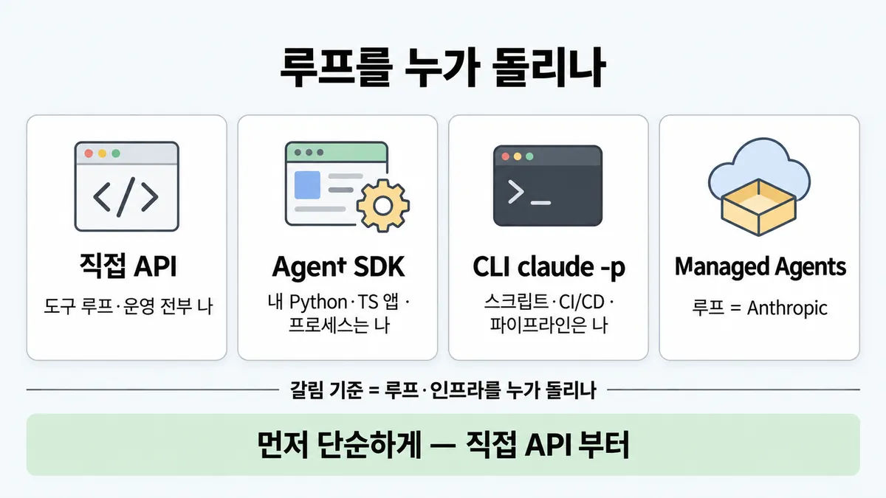
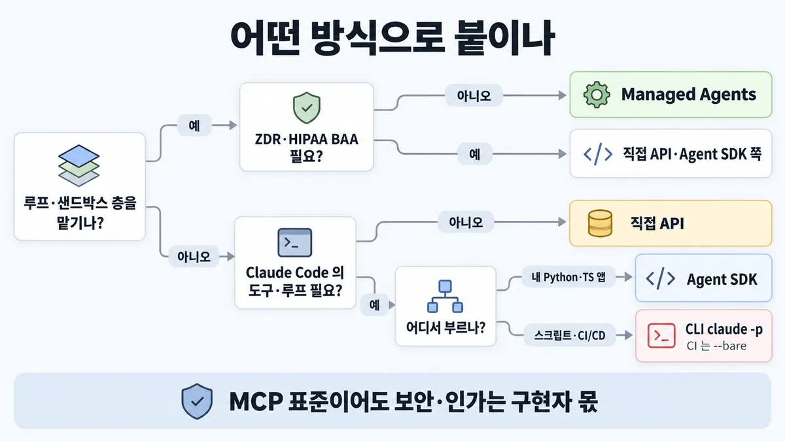
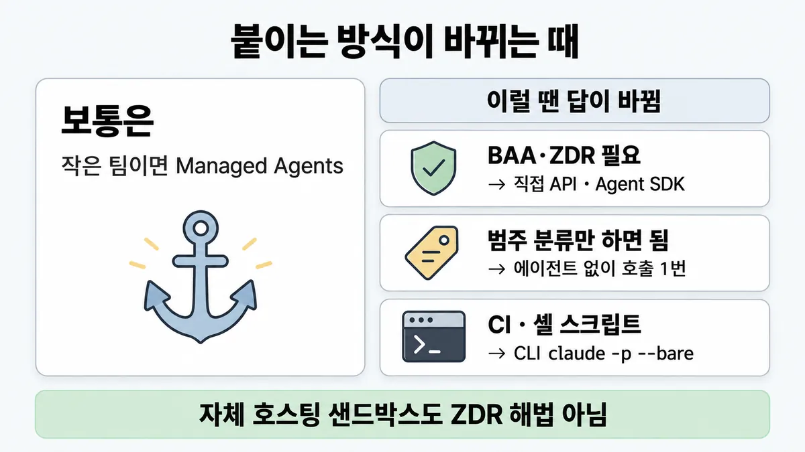

◆ 직접 API vs Agent SDK vs CLI vs Managed Agents
표시가 없는 문장은 공식 문서에서 확인한 내용이에요. 다른 표시는 읽는 법
왜 배우나 — 시험이 요구하는 것
시험 목표 3.7 연결 방식 고르기 · D3 연결 19%Evaluate connection protocols and select the appropriate integration mechanism (MCP, API/CLI, agent-to-agent)
이 개념으로 푸는 판단 (할 수 있어야 하는 것)
- 3.7② 작은 플랫폼팀이 고객지원 에이전트를 띄운다 — 직접 API · Agent SDK · CLI(-p) · Managed Agents 중 무엇? — 연동 방식 고르기 (도구 루프·인프라를 누가 소유하나)
- 3.7③ 서로 얽힌 모듈을 고치는 코딩 작업을 에이전트 5개 병렬로 나누자는 제안 — 에이전트끼리 연결이 맞나? — 멀티 에이전트(agent-to-agent)를 쓸지 — 비용·적합성
한눈에


ELI5
밥을 직접 해 먹을지, 밀키트를 살지, 식당에 갈지 고르는 거예요.
- 직접 하면 마음대로지만 설거지도 내 몫이에요(직접 API).
- 밀키트는 재료·순서가 다 들어 있고 내 부엌에서 해요(Agent SDK).
- 식당은 요리사가 다 해 주지만 메뉴 규칙을 따라야 해요(Managed Agents).
- 식당이 "주문 기록을 안 남기는" 약속은 아직 못 해요.
개념 설명
원리
네 가지는 "누가 무엇을 돌리나"로 갈림
- 직접 API : 모델 호출만 받음. 도구 루프(부르고·결과 넣고·다시 부르기)를 내가 짬. SDK tool runner(베타)가 루프를 대신 돌려 줄 수도.
- Agent SDK : Claude Code 의 내장 도구·권한·세션·훅·서브에이전트·MCP 를 라이브러리로. 루프는 들어 있고, 프로세스는 내가 운영.
- CLI
-p: 같은 루프를 명령 한 줄로. 스크립트·CI/CD·Python·TS 밖 언어의 하위 프로세스. - Managed Agents : 루프·도구 실행·샌드박스를 Anthropic 이 호스팅. 세션·기록·샌드박스 상태가 서버에 남음(상태 유지 설계).
단순함이 먼저
- 공식은 "가장 단순한 해법부터, 필요할 때만 복잡하게". 많은 패턴이 API 직접 호출 몇 줄. 에이전트 자체가 필요 없을 수도.
- 프레임워크는 추상화 층이 프롬프트·응답을 가려 디버깅이 어려워짐.
상태 유지의 대가
- Managed Agents 는 서버에 세션을 저장 → ZDR·HIPAA BAA 대상이 아님. 규정 요구가 있으면 여기서 갈림.
- 자체 호스팅 샌드박스는 "실행 위치"를 우리 인프라로 옮기는 것(규정 준수·데이터 상주용). ZDR 적격을 바꾼다는 문장은 없음.
MCP 는 연결 규격이지 보안 결정이 아님
- MCP 규격 스스로 "프로토콜 수준에서 보안 원칙을 강제할 수 없다, 구현자가 해야 한다"고 적음.
규칙과 판단


갈림길
루프를 누가 [3.7②]
Managed Agents
루프 = Anthropic. 샌드박스 = Anthropic 클라우드 또는 자체 호스팅
직접 API·Agent SDK 쪽
Managed Agents 는 지금 대상 아님(세션·샌드박스 상태를 서버에 저장하는 설계라) · 둘 중 어느 쪽인지는 → 내가 돌릴 때
다음 물음 — Claude Code 의 도구·루프·컨텍스트 관리가 필요?
내가 돌릴 때 [3.7②]
직접 API
도구 루프는 내가 짜거나 SDK 의 tool runner(베타). 먼저 단순하게 : 직접 API 부터 — 많은 패턴이 몇 줄
Agent SDK
내가 운영하는 프로세스에서. 프로세스·자격증명·observability(관측 가능성) = 나
CLI claude -p
(+ --output-format json, CI 는 --bare)
규칙 원문 갈림 기준 (갈림길로 그린 규칙)
갈림 기준
에이전트 루프·도구 실행·인프라를 **누가 돌리나**
| 원하는 것 | 고름 | 운영은 |
|---|---|---|
| 내 코드에서 Claude API 를 직접. 도구 루프는 내가 짜거나 SDK 의 tool runner(베타) | 직접 API (Client SDK) | 전부 나 |
| Claude Code 의 도구·루프·컨텍스트 관리를 내 Python·TypeScript 앱에, 내가 운영하는 프로세스에서 | Agent SDK | 프로세스·자격증명·observability = 나 |
| 스크립트·CI/CD · Python·TS 밖 언어에서 같은 루프 | CLI claude -p (+ --output-format json, CI 는 --bare) | 파이프라인 = 나 |
| 루프·샌드박스·도구 실행 층을 안 만듦 · 장기 실행·비동기 · cron 예약 | Managed Agents | 루프 = Anthropic. 샌드박스 = Anthropic 클라우드 또는 자체 호스팅 |
먼저 단순하게 : 직접 API 부터 — 많은 패턴이 몇 줄. 프레임워크는 그 밑에서 도는 코드를 알 때만. 에이전트가 아예 필요 없을 수도
- Managed Agents 자체 호스팅 샌드박스 = 규정 준수·데이터 상주용. 그만큼 운영 일부가 우리 쪽에 남음 (추론)
- ZDR·HIPAA BAA 필요 → Managed Agents 는 지금 대상 아님(세션·샌드박스 상태를 서버에 저장하는 설계라) → 직접 API·Agent SDK 쪽
- MCP 는 도구·데이터 연결을 표준화할 뿐 : 보안 원칙을 프로토콜이 강제 못 함 — 동의·인가(authorization)·접근 통제(access control)는 구현자 몫
- MCP 서버 vs 직접 API 호출 : MCP 서버는 도구 정의·실행이 이미 만들어져 있음, API 를 직접 부르면 도구 정의를 내가 씀 (Skilljar)
- CLI
-p주의 :--bare없이 돌리면 그 폴더의.claude/settings.json훅·.mcp.json서버가 신뢰 확인창 없이 돔 → CI·스크립트는--bare권장
더 깊이 : 판단 규칙 · 상황 변수 (설명)
판단 규칙
| 조건 | 답 | 근거 |
|---|---|---|
| 루프·세밀한 통제(control)를 내가 원함 | 직접 API | managed-agents "Custom agent loops and fine-grained control" · agent-sdk overview |
| Claude Code 급 도구·루프를 내 앱 프로세스에 | Agent SDK | agent-sdk overview |
| 스크립트·CI/CD · 다른 언어에서 같은 루프 | CLI -p (--output-format json, CI 는 --bare) | agent-sdk overview · headless |
| 장기 실행·비동기 · 루프·샌드박스를 안 만들고 싶음 | Managed Agents | managed-agents |
| 규정 준수·데이터 상주 + 관리형 루프 | Managed Agents 자체 호스팅 샌드박스 | managed-agents |
| ZDR 또는 HIPAA BAA 필요 | Managed Agents 제외 | managed-agents |
| 뭘 할지 모르겠음 | 가장 단순한 것(API 직접)부터 | building-effective-agents |
| "MCP 를 쓰니 보안은 됐다" | 아님 — 구현자가 동의·인가(authorization)·접근 통제 | MCP spec |
상황 변수
| 변수 | 값 | 답 쪽 | 근거 |
|---|---|---|---|
| 운영 인력 | 없음 | Managed Agents | managed-agents "Minimal infrastructure" |
| 운영 인력 | 있음 + 루프 통제 원함 | 직접 API 또는 Agent SDK | 판단 규칙 1·2 |
| 규정 | ZDR · HIPAA BAA | 직접 API·Agent SDK 쪽 | managed-agents |
| 규정 | 데이터 상주만(ZDR 불필요) | Managed Agents 자체 호스팅 샌드박스도 가능 | managed-agents |
| 작업 길이 | 한 번 호출로 끝(분류·요약) | 직접 API (에이전트 불필요) | building-effective-agents |
| 작업 길이 | 수 분~수 시간, 도구 여러 번 | Agent SDK 또는 Managed Agents | managed-agents |
| 실행 계기 | CI 파이프라인·크론 스크립트 | CLI -p --bare (또는 Managed Agents 예약 배포) | headless · managed-agents |
| 언어 | Go·Java 등 | 직접 API(Client SDK) 또는 CLI 하위 프로세스 | agent-sdk overview |
| 인증(authentication) | 우리 제품에 claude.ai 로그인 | 사전 승인 없인 불가 → API 키 | agent-sdk overview |
연습 문제
운영 인력이 2명뿐인 병원이 에이전트 루프·샌드박스는 직접 만들고 싶지 않다안 만들고 싶음며, 환자 메시지를 분류하고 답장 초안을 쓰는 장기 실행 에이전트를 원한다. 계약상 HIPAA BAA 적용이 필수BAA 필수다. 어떤 방식으로 붙일까?
시험 대비
함정
- "MCP 표준을 쓰니 보안·규정 검토는 끝났다" → 프로토콜은 강제 못 함
- "추상화 프레임워크부터 깐다" → API 직접부터
- "운영 인력 없는 작은 팀이 Agent SDK 로 직접 호스팅" → 프로세스 운영이 우리 몫. "최소 인프라"는 공식이 Managed Agents 에 붙인 조건 (단 ZDR·BAA 필요하면 Managed Agents 탈락)
- "Managed Agents 면 ZDR 도 해결" → 대상 아님
- "Agent SDK 제품에 claude.ai 로그인을 붙여 출시" → 사전 승인 없인 안 됨, API 키 인증(authentication)
- "integration continuum" 은 강의가 만든 이름 — 공식 용어 아님 (목록 메모)
- "좁은 연동 경계가 중요하면 직접 API" → 공식 기준 없음. 공식 근거는 단순성 업계 일반
- "에이전트끼리 연결(agent-to-agent)이 더 고급" → 적합성·비용 판단은 ◆ 단일 vs 멀티 에이전트
신호
"Embed Claude Code’s agent in your own Python or TypeScript application, in a process you operate"
"You write the tool loop yourself, or let the client SDK’s beta tool runner drive it."
"A hosted agent harness that runs the agent loop, with sessions in an Anthropic-managed cloud sandbox or a self-hosted sandbox on your own infrastructure."
"It’s available as a CLI for scripts and CI/CD"
"We suggest that developers start by using LLM APIs directly: many patterns can be implemented in a few lines of code."
"While MCP itself cannot enforce these security principles at the protocol level, implementors SHOULD:"
"Managed Agents is not currently eligible for Zero Data Retention or HIPAA Business Associate Agreement (BAA) coverage."


더 깊이 : 뒤집히는 때 · 오답 재료 (설명)
뒤집히는 때
1. 작은 팀인데 Managed Agents 가 안 되는 때
- 조건 : 운영 인력 2명, 병원 환자 메시지를 처리(HIPAA BAA 필수).
- 판단 : "최소 인프라"만 보면 Managed Agents 지만 BAA 대상이 아님 → 직접 API 또는 Agent SDK 로 우리가 호스팅. 규정 조건이 운영 편의를 이김.
- 근거 : managed-agents
2. 에이전트가 필요 없는 때
- 조건 : 들어오는 티켓을 5개 범주로 나누기만.
- 판단 : 호출 1번 + 구조화 출력이면 끝. Agent SDK·Managed Agents 는 과설계. 공식 "에이전트 시스템을 아예 안 만드는 것일 수도".
- 근거 : building-effective-agents
3. CLI 가 SDK 보다 나은 때
- 조건 : PR 마다 GitHub Actions 에서 리뷰 한 번, 팀은 셸 스크립트만 씀.
- 판단 : 앱을 짤 필요 없이
claude -p --bare --output-format json.--bare로 러너 머신의 훅·MCP·CLAUDE.md 가 섞이지 않게. - 근거 : headless
4. 자체 호스팅 샌드박스를 ZDR 해법으로 착각하는 때
- 조건 : "샌드박스를 우리 인프라에 두면 ZDR 도 된다"는 제안.
- 판단 : 공식은 자체 호스팅을 "규정 준수·데이터 상주"용이라 하고, Managed Agents 전체를 ZDR·BAA 대상 아님으로 적음. 예외 문장 없음 → ZDR 해법으로 보면 안 됨.
- 등급 : (두 문장) · 미해결(자체 호스팅 적격 여부를 직접 말한 문장 없음)
- 근거 : managed-agents
오답 재료
| 오답 | 왜 끌리나 | 왜 틀리나 | 등급 | 근거 |
|---|---|---|---|---|
| "MCP 표준을 쓰니 보안·규정 검토는 끝" | 표준 = 검증됨 감 | 프로토콜이 강제 못 함, 구현자 몫 | MCP spec | |
| "추상화 프레임워크부터 깐다" | 빨리 시작 | API 직접부터. 추상화가 디버깅을 가림 | building-effective-agents | |
| "Managed Agents 로 가면 ZDR 도 해결" | 관리형 = 규정 해결 감 | ZDR·BAA 대상 아님 | managed-agents | |
| "운영 인력 없어도 Agent SDK 로 직접 호스팅이 표준" | SDK = 공식 권장 같음 | 프로세스 운영이 우리 몫 | agent-sdk overview "in a process you operate" | |
"CLI -p 는 개발자 터미널 전용" | 대화형 도구로만 알고 있음 | 스크립트·CI/CD 용으로 명시 | headless | |
| "Agent SDK 제품에 claude.ai 로그인 제공" | 사용자 편의 | 사전 승인 없인 불가 | agent-sdk overview | |
| "좁은 연동 경계가 표준보다 중요하면 직접 API" | 그럴듯한 원칙 | 공식 기준 없음. 공식 근거는 단순성 | 업계 일반 | 목록 3.7② 메모 |
참고
개념
출처
- 가이드 목표 3.7 공식 시험 가이드 v1.0
- agent-sdk overview
- headless
- managed-agents overview
- building-effective-agents
- MCP spec 2025-11-25
- Skilljar MCP 296689
상태
- 추론 1줄
- 업계 일반 1줄
미해결
- Managed Agents 자체 호스팅 샌드박스의 ZDR·BAA 적격을 직접 말한 문장 없음 — overview 는 Managed Agents 전체를 대상 아님으로 적음. api-and-data-retention 문서는 안 받음.
- 목록 3.7② 인용 5개 모두 원문에서 찾음. 단 "A hosted agent harness…" 문장은 원문에 링크가 섞여 있어 링크를 뺀 형태로 옮김.
- 3.7③(에이전트끼리 연결)의 비용·적합성(토큰 4배·15배 등)은 ◆ 단일 vs 멀티 에이전트 카드 몫이라 여기서 확인하지 않음.